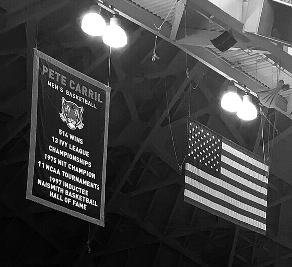
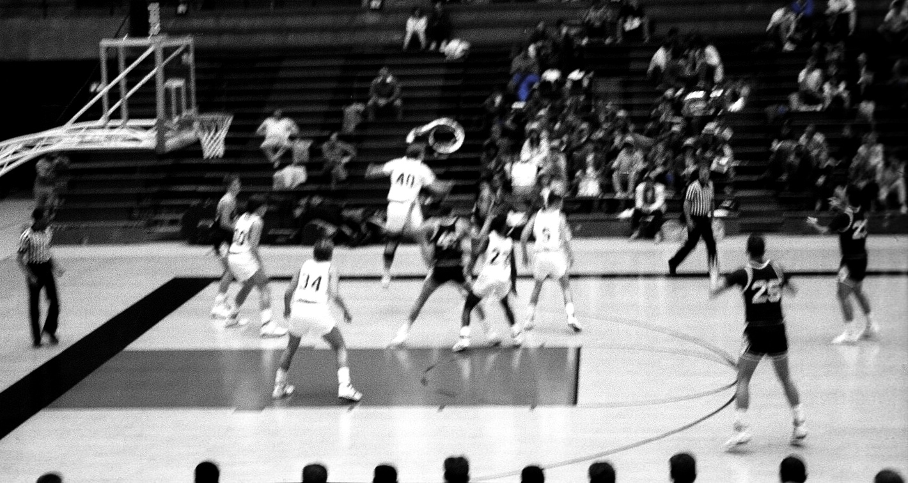

JADWIN GYMNASIUM, PABELLÓN DE PRINCETON · FOTO (2015): DAVID KEDDIE, CC BY-SA 4.0
PRINCETON
RIVALRECREACIÓN
UCLA
CAMPEÓN 1995

PANCARTA DE PETE CARRIL EN EL JADWIN · FOTO (2018): JONATHAN SCHILLING, CC BY-SA 4.0
ARCHIVO · PRINCETON EN EL JADWIN, 1988 · FOTO: JOE SHLABOTNIK, CC BY 2.0
NCAA 1996 · PRIMERA RONDARECREACIÓN
PRINCETON0 – 0UCLA
FOTOS: DAVID KEDDIE (CC BY-SA 4.0) · JONATHAN SCHILLING (CC BY-SA 4.0) · JOE SHLABOTNIK (CC BY 2.0),
VÍA WIKIMEDIA COMMONS · PIZARRA, RELOJ, MARCADOR, TROFEO Y CASCO: RECREACIÓN